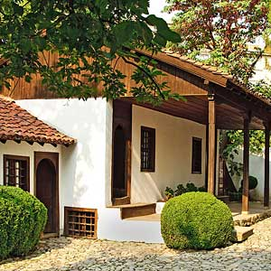

Родната къща на Апостола, построена в края на ХVІІІ век, е възстановена през 1933 г. и е отворена за посещение като музей през 1937 г.
Комплексът включва още експозиционна зала, Чардаклиевата къща, Онбашиевата къща и параклиса „Всех святих болгарских”, където се съхранява част от косите на Апостола.
Музеят е включен в „100-те национални туристически обекта”.
виж на картата 